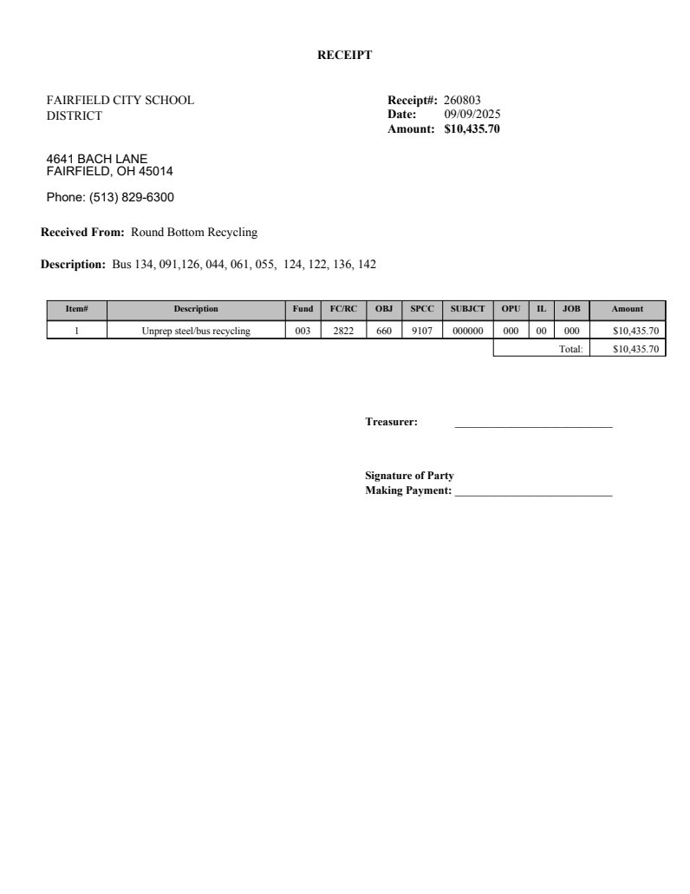

Source exhibit
10 Buses - scrap receipt.pdf
Source SHA-256: 384406517066e8672de04215b4f7df076d1ab147fb62ff5c7a7578a7e5485b4b
Page 1

Extracted text · page 1
RECEIPT FAIRFIELD CITY SCHOOL DISTRICT 4641 BACH LANE FAIRFIELD, OH 45014 Phone: (513) 829-6300 Receipt#: 260803 Date: 09/09/2025 Amount: $10,435.70 Received From: Round Bottom Recycling Description: Bus 134, 091,126, 044, 061, 055, 124, 122, 136, 142 Item# Description Fund FC/RC OBJ SPCC SUBJCT OPU IL JOB Amount 1 Unprep steel/bus recycling 003 2822 660 9107 000000 000 00 000 $10,435.70 Total: $10,435.70 Treasurer: ____________________________ Signature of Party Making Payment: ____________________________